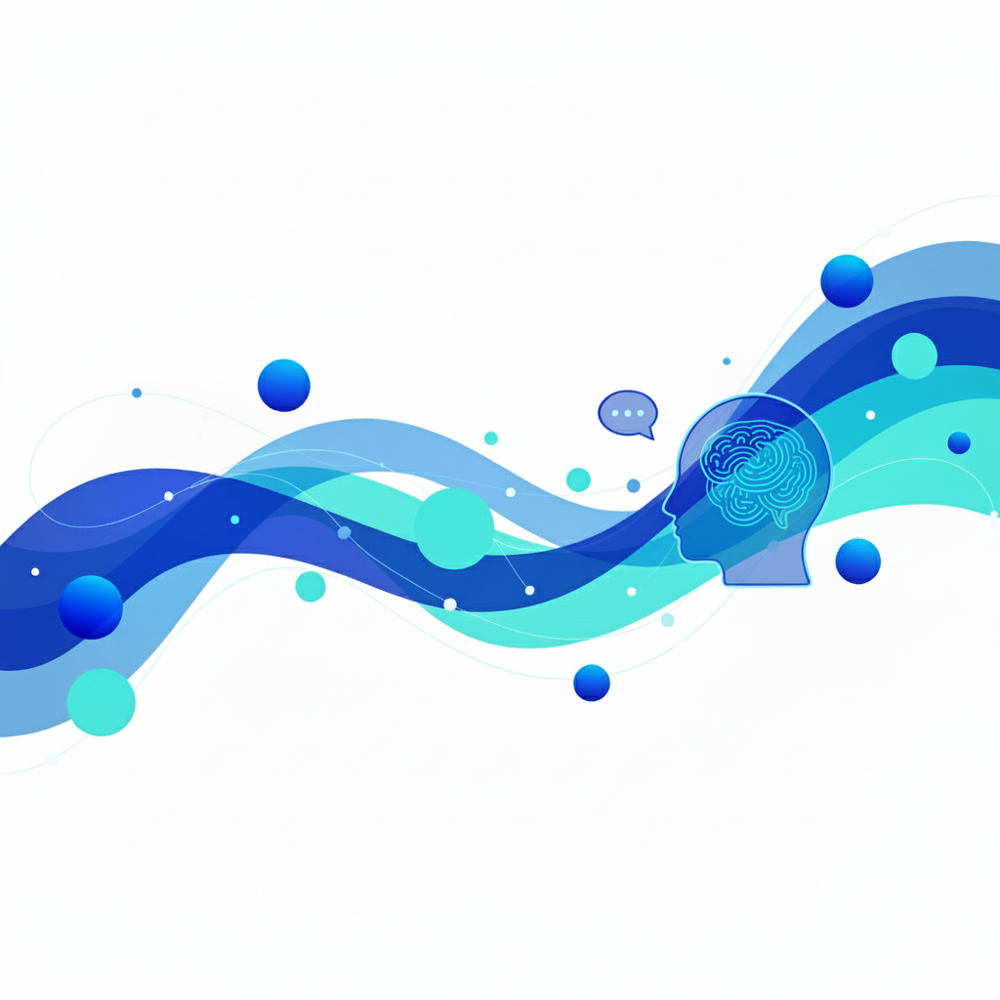

Apoio Conecta
Início
Minha Área
Configurações
Sair

Bem-vindo(a) à sua Área, [Nome do Paciente]!
Aqui você pode gerenciar seus atendimentos e acessar recursos de apoio.
Agendar Atendimento
Ver Histórico
Conteúdos de Apoio
Canal de Escuta